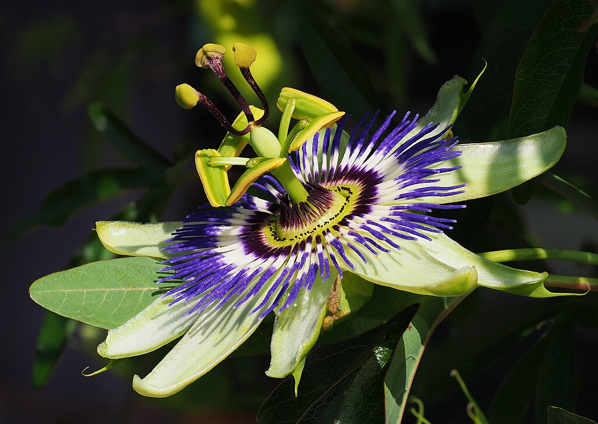
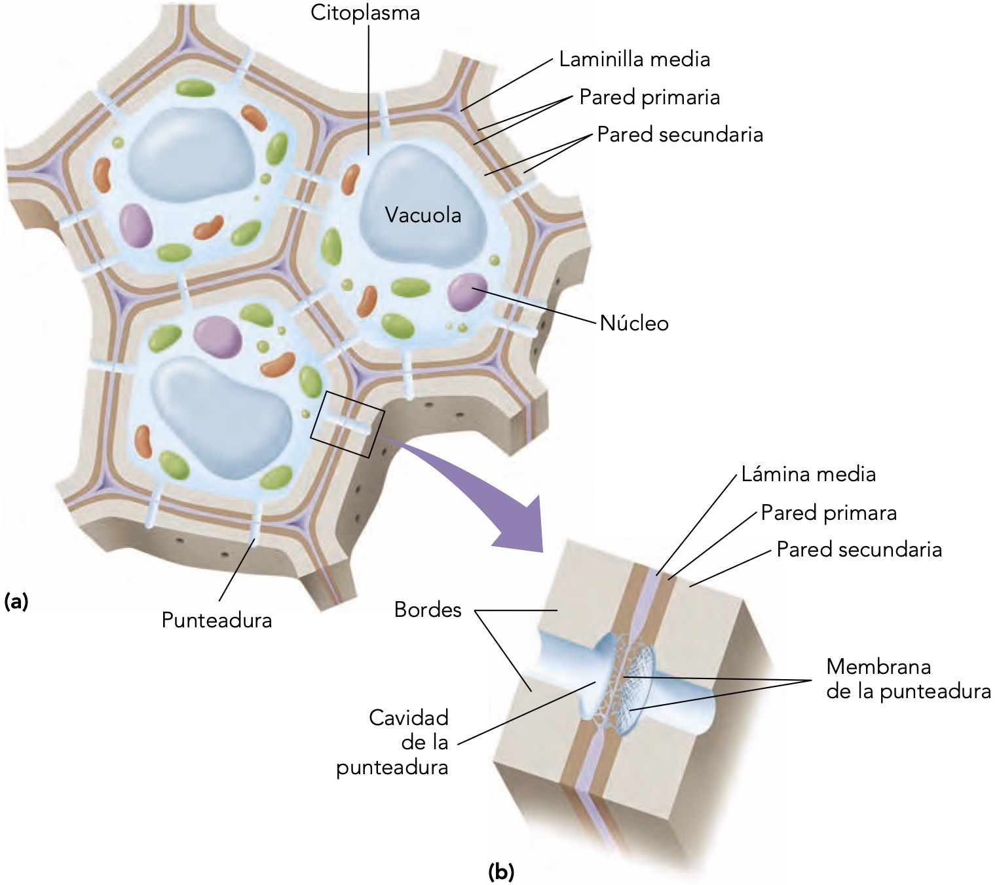
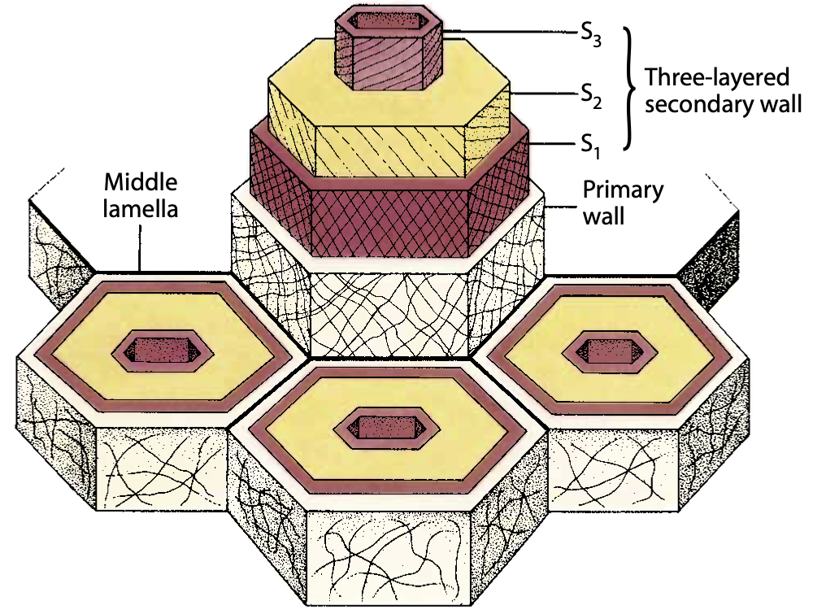
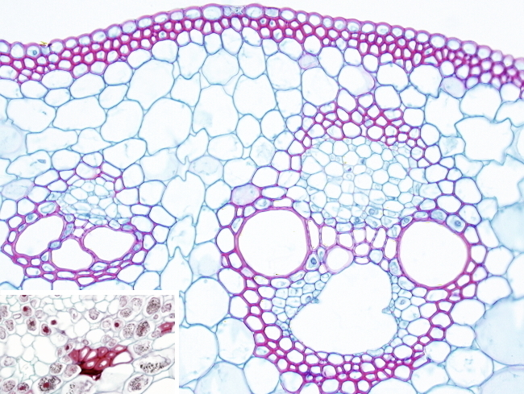

| Pared celular |
Protoplasma
|
|
|---|---|---|
| Núcleo | Citoplasma | |
| Lámina media | Envoltura nuclear | Membrana plasmática (límite exterior del citoplasma) |
| Pared primaria | Nucleoplasma | Citosol |
| Pared secundaria | Cromatina | Orgánulos rodeados por dos membranas: plástidos y mitocondrias |
| Plasmodesmata | Nucleolo | Orgánulos rodeados por una membrana: peroxisoma, vacuolas rodeadas por tonoplasto |
| Sistema de endomembranas (componentes principales): retículo endoplásmico, aparato de Golgi y vesículas1 | ||
| Citoesqueleto: microtúbulos y filamentos de actina | ||
| Ribosomas | ||
| Cuerpos oleosos | ||
| 1 El sistema de endomembranas también incluye la membrana plasmática, la envoltura nuclear, el tonoplasto y todas las demás membranas internas, a excepción de las membranas mitocondrial, plastidial y peroxisomal. | ||
Citología: laboratorio
Células
Cuando se estudian a nivel celular, incluso los organismos más diversos son notablemente similares entre sí, tanto en su organización física como en sus propiedades bioquímicas. Evert & Eichhorn (2013).


Célula vegetal
La célula vegetal suele estar formada por una pared celular más o menos rígida y un protoplasto. Evert & Eichhorn (2013).

Pared celular



Tinciones y colorantes
| Azul de toluidina | Safranina - Azul alcián | |
|---|---|---|
| Pared primaria | Azul a púrpura | Azul |
| Pared secundaria | Verde brillante | Rojo |
| Suberina y cutina | Verde brillante | Rojo |


Identificación de Lignina
Corte transversal de tallo de Aristolochia ringens con Safranina-Azul de Alcian.

Fig 14: Corte transversal de tallo de Aristolochia ringens. A. Detrick (2025). B. Curtis et al. (2019). C. Costea (2012).
Estructura, Formas, diversidad e inclusiones citoplasmáticas
Corte transversal de hoja de Ficus elastica con Safranina-Azul de Alcian.
Epidermis pluriestratificada, cistolitos en idioblastos.


{kind=link}
{kind=link}
{kind=link}
{kind=link}
.jpg){kind=link}
{kind=link}
{kind=link}
{kind=link}